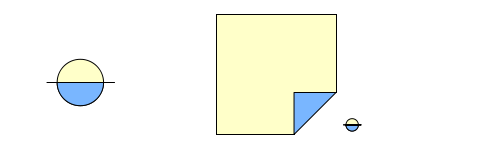
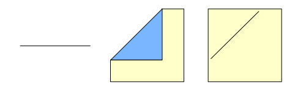
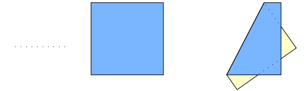

Welcome in Origami with 3D Animation
Use directions:
- You can select any 3D Animation from the navigator in the right side.
- You can navigate in 3D scene with mouse freely,by which you can observe the
model from any direction.
- You can change the field of view in 3D scene by rotating mousewheel forwards or
backwords.
- At some 3D scenes you can click the buttons below, which stand for appropriate
observation positions the author suggests.
Copy right:
- All the two-dimensional pictures(diagrams in Yoshizawa-Randlett-System) come from https://commons.wikimedia.org/wiki/Main_Page.
- All the X3D scenes and the design of website belong to the author.
Side Color-2D Diagram

Side Color-3D Animation
Crease-2D Diagram

Crease-3D Animation
Invisible Line-2D Diagram

Invisible Line-3D Animation